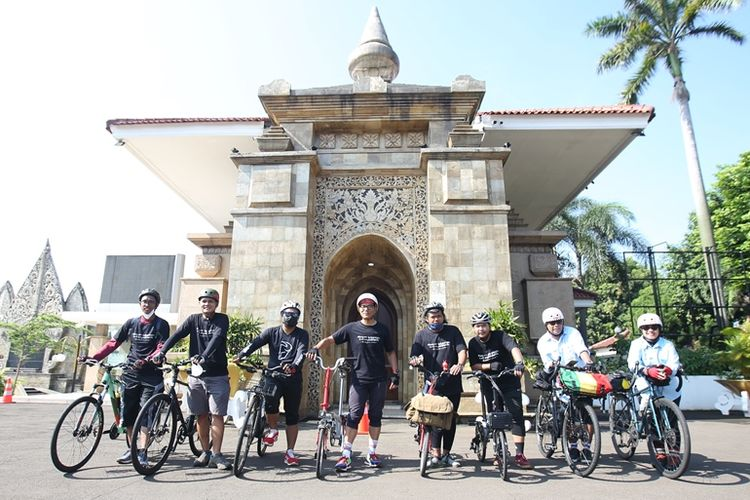

HUT Ke-27 "Kompas.com": Bersepeda, Berziarah, dan Berbagi Beasiswa

JAKARTA -
Melanjutkan tradisi tahunan menyambut HUT Kompas.com, kami berziarah ke makam para pendiri Kompas Gramedia dan rekan-rekan kerja yang mendahului untuk menghadap Sang Pencipta serta menyerahkan donasi.
Gerakan bersepeda, berziarah, dan berbagi kami mulai sejak 2020, ketika Kompas.com berulang tahun ke-25.
Menjelang ulang tahun ke-27 Kompas.com pada 14 September 2022, kami kembali bersepeda ke empat tempat pemakaman pada Minggu (11/9/2022).
Ini adalah upaya kami untuk terus menghormati jasa para pendiri dan rekan-rekan yang telah berkontribusi membangun Kompas.com.
Rombongan sepeda dibagi dua. Rombongan pertama start dari Bentara Budaya Jakarta, Palmerah Selatan, menuju TPU Menteng Pulo, Jakarta Selatan.
Di sana, tempat rekan kerja kami, Ervan Hardoko, dimakamkan. Koko, panggilannya, berpulang pada 8 Agustus 2019.
Sedangkan rombongan lainnya start dari Depok menuju makam ke makam Moh Latif. Kong Latif, sapaan akrab rekan kerja kami, berpulang pada 28 Desember 2019.
Kemudian rombongan bertolak ke titik makam terakhir, yakni TPU Tanah Kusir, Jakarta Selatan. Di sana, tempat peristirahatan terakhir pendiri Kompas Gramedia, Bapak P.K. Ojong, yang wafat pada 31 Mei 1980.
Di TPU yang sama, rekan kerja kami, Kurnia Sari Azizah alias Icha, dimakamkan. Icha berpulang pada 31 Juli 2020.
Rombongan bersepeda finis di Bentara Budaya Jakarta, Palmerah Selatan. Di titik ini sekaligus penyerahan simbolis beasiswa dari kanal Health Kompas.com tahap II. Penerima beasiswa merupakan anak-anak yang menjadi yatim atau piatu akibat pandemi pada 2020-2021. Mereka rentan putus sekolah.